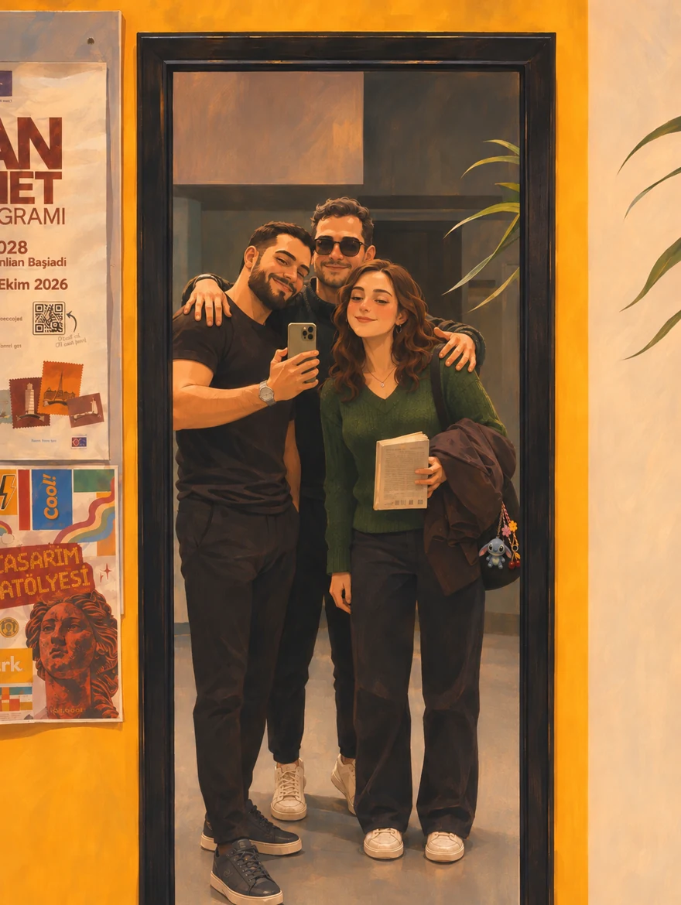

About Us

Oath of the Seventh is our graduation project, brought to life by the three of us: Betül, Emre, and Seymen. We’re developing a story-driven action role-playing game set in Avaris, a world shared by seven kingdoms.
Avaris grew out of Betül’s personal connection to stories. Sometimes she feels more at home in imagined worlds than she does in this one. Reading books, playing games, and losing herself in a story on screen are things she loves. At times, they feel as essential as breathing. When she created Avaris, she wanted to give people who feel the same way a world where they could follow whatever detail caught their attention and stay as long as they liked.
Emre leads the game’s technical development. Seymen oversees the printing of our promotional materials, including our posters and parchment maps. We’re making this project without any aim of financial gain. We love what we do, and we want to share it with anyone who’s curious.
In the game, you’ll discover Avaris through the eyes of a knight from Drakvar. Here on the site, you can explore the world before and after his journey, read its creation myth, or see how two kingdoms remember the same event differently. Maybe what keeps you here a little longer is simply the name of a place you’ve never seen on a map before. We’re sharing Avaris so you can follow that curiosity wherever it takes you.
The Creator Team
Betül, Emre, and Seymen